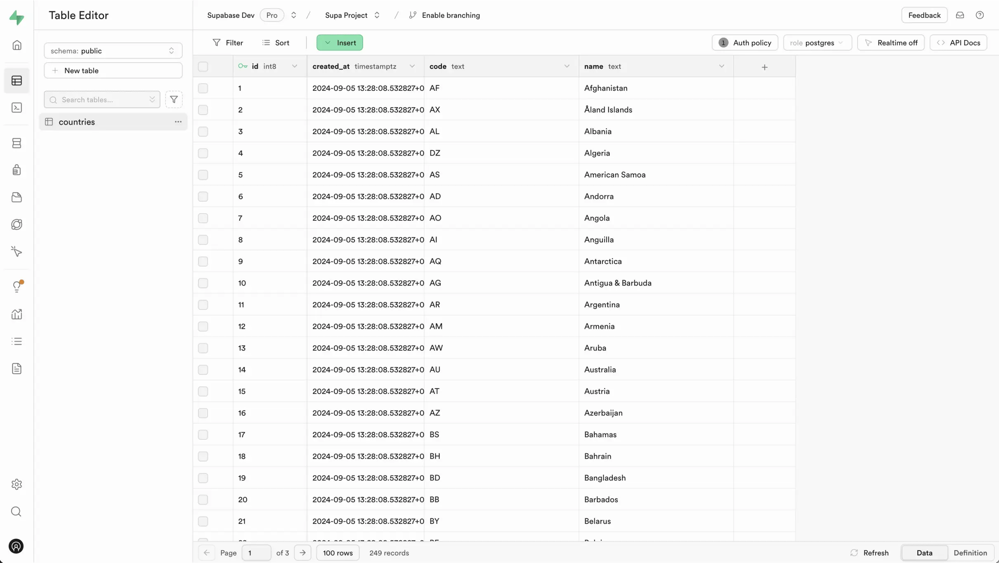

<!-- Reference section 05-dashboard (section). Styles: ../styles.css. Its words are the page's own; keep the structure, classes and assets. -->
<section id="dashboard" class="border-b border-border"><div class="section-container relative py-16 sm:py-18 md:py-24 pt-10! pb-4! space-y-8 overflow-hidden"><div class="pt-12 flex flex-col gap-8"><h3 class="text-2xl md:text-4xl text-foreground-lighter"><span class="text-foreground">Stay productive and manage your app</span><br class="hidden sm:block"> without leaving the dashboard</h3><div class="flex gap-2" role="tablist"><button tabindex="0" aria-selected="true" role="tab" class="py-1.5 px-3 lg:py-2 lg:px-8 border rounded-full bg-alternative text-sm transition-all hover:border-foreground-lighter hover:text-foreground opacity-100 !border-foreground">Table Editor</button><button tabindex="0" aria-selected="false" role="tab" class="py-1.5 px-3 lg:py-2 lg:px-8 border rounded-full bg-alternative text-sm opacity-80 transition-all hover:border-foreground-lighter hover:text-foreground">SQL Editor</button><button tabindex="0" aria-selected="false" role="tab" class="py-1.5 px-3 lg:py-2 lg:px-8 border rounded-full bg-alternative text-sm opacity-80 transition-all hover:border-foreground-lighter hover:text-foreground">RLS Policies</button></div></div><div class="relative rounded-2xl shadow-lg p-2 h-full border flex flex-col overflow-hidden bg-default w-full mx-auto -mb-16"><div class="w-full px-2 pt-1 pb-3 relative flex items-center gap-1.5 lg:gap-2"><div class="w-2 h-2 bg-border rounded-full"></div><div class="w-2 h-2 bg-border rounded-full"></div><div class="w-2 h-2 bg-border rounded-full"></div></div><div class="h-full w-full aspect-video overflow-hidden rounded-lg"><div class="relative w-full max-w-full h-full" style="opacity: 1;"><div class="relative h-full w-full"><video class="relative z-10 block w-full h-full reduce-motion:hidden" height="100%" width="100%" loop="" autoplay="" playsinline="" poster="../assets/images/038-supabase-table-editor-light.png" src="../assets/media/039-supabase-table-editor-light.webm"><source src="../assets/media/039-supabase-table-editor-light.webm" type="video/webm"></video></div></div></div></div></div></section>
